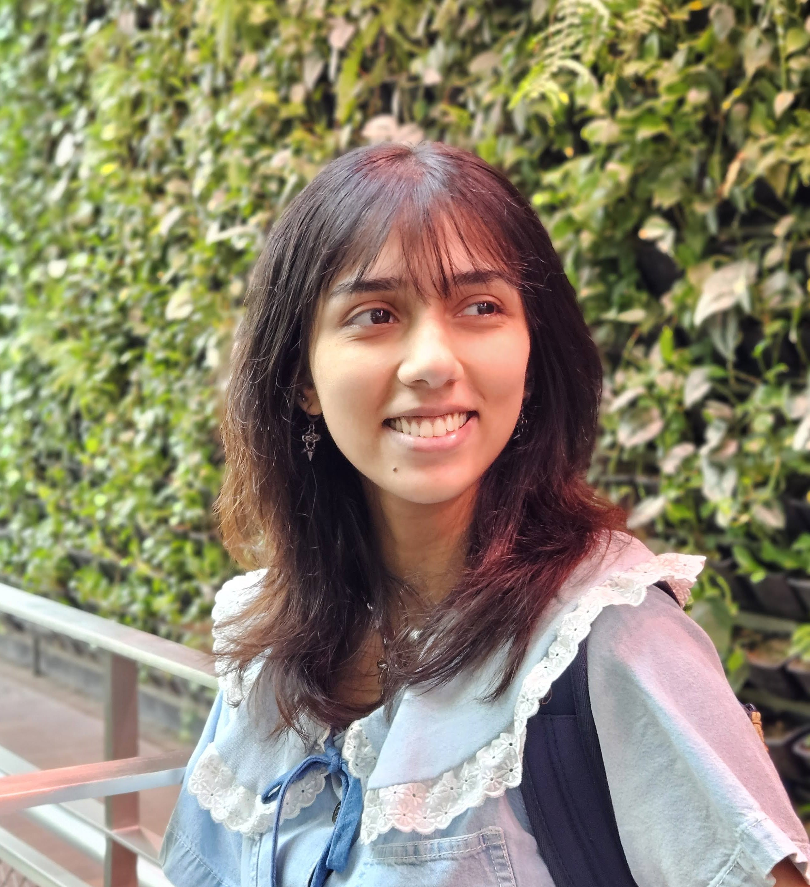
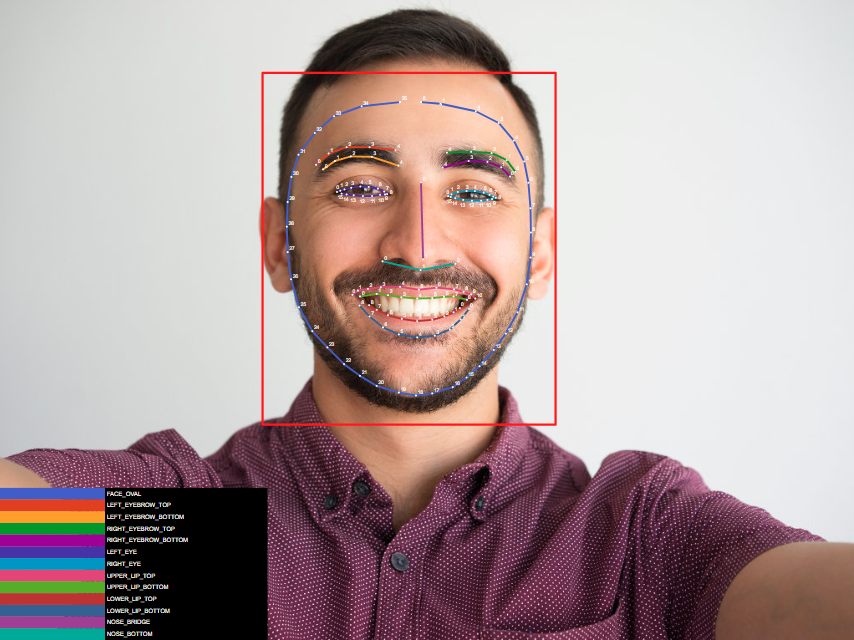
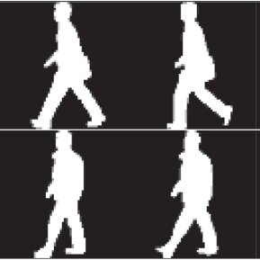
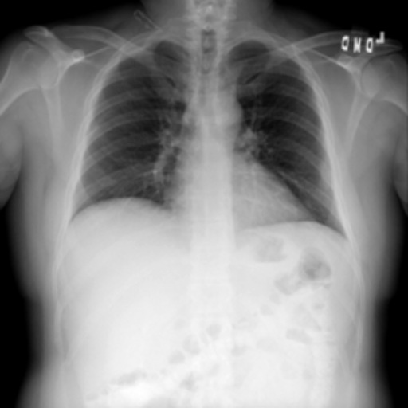

|
Fatima Nuzhat I am a recent graduate from the Shahjalal University of Science and Technology with a bachelor in Computer Science and Engineering. My research interests are Computer Vision, Light-weight ML models, Biometric Data, Trustwrothy AI, and Medical Image Segmentation My long-term research goal is to develop AI algorithms that can learn from small data and generalize well to new tasks. I am particularly interested in the intersection of computer vision and healthcare. I want to democratize AI in computer vision, make them less prone to biases and increase fairness. Seeking MSc position for Fall 2025 |
 |
{kind=link}
ResearchI'm interested in image restoration, multi-modal learning, medical image analysis, 3D reconstruction, and generative models. I'm particularly interested in developing algorithms that can learn from small data and generalize well to new tasks. I'm also interested in the intersection of computer vision and healthcare, and I'm excited about the potential for AI to improve patient outcomes and reduce healthcare costs. |
Education |
|
Shahjalal University of Science and Technology BS.c Engg. in Computer Science and Engineering, (CGPA 3.67/4.00), top 15% of class Jan 2019 - Jan 2024 |
|

Sharp
|
Facial Emotion Recognition Using Mobile Devices: A TensorFlow Lite Approach with ML
Kit Integration
Our investigation focused on real-time facial expression detection for Android mobile devices, harnessing the collective capabilities of TensorFlow Lite for streamlined model deployment and ML Kit for on-device processing. ML Kit was employed to extract facial structures from images, thereby enhancing emotion recognition accuracy. The central aspect of our research involved constructing a prototype facial emotion recognition system that integrated Tensorflow Lite, ML Kit, and the extracted facial structures. This system incorporated algorithms tailored for mobile devices, facilitating the extraction of facial features, emotion classification, and real-time predictions. Its architecture was meticulously optimized to ensure efficient resource utilization and minimal processing power consumption, resulting in seamless performance on Android phones. |
|

|
Domain Adaptation of Gait Recognition Algorithms
During my 10-week internship under Dr. Terence Sim, I developed a novel triplet loss function to improve the generalizability of deep learning models for gait recognition. The approach addressed performance discrepancies across datasets by incorporating gait-related factors like silhouette, viewing angle, and clothing variations. The project, built on models like OpenGait and BigGait using the CCGR dataset, led to promising improvements in model performance and enhanced my technical and communication skills in a research setting. |
|

|
Implementing UNet++ Segmentation Model for Respiratory Disease Detection
In this study, we use UNet++, a new architecture created for segmenting medical images, for the segmentation of Lung Images with the purpose of detecting various respiratory problems. There are existing researches based on the U-Net architecture, which has already shown to outperform previous methods on challenges for segmentation of neuronal structures and cell tracking. But with an average Intersection over Union (IoU) gain of 3.9 and 3.4 points, respectively, trials on a variety of medical picture segmentation tasks show that UNet++ with deep supervision outperforms U-Net and wide U-Net designs in terms of IoU scores. The original U-Net architecture has been extended into UNet++ in order to fix several issues and improve its performance in a variety of tasks. UNet++ minimizes the semantic gap between encoder and decoder networks using stacked, dense skip routes. Our study demonstrates a model built using the mentioned architecture, for the sole purpose of segmenting lung images. This model has been able to achieve a relatively high score considering the limitations of the dataset. |
News |
Work Experience |

|
Research Collaborator, Shahjalal University of Science and Technology, |

|
Research Assistant, National University of Singapore, |
|
© Fatima Nuzhat Template from Jon Barron |